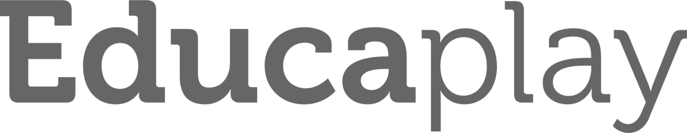
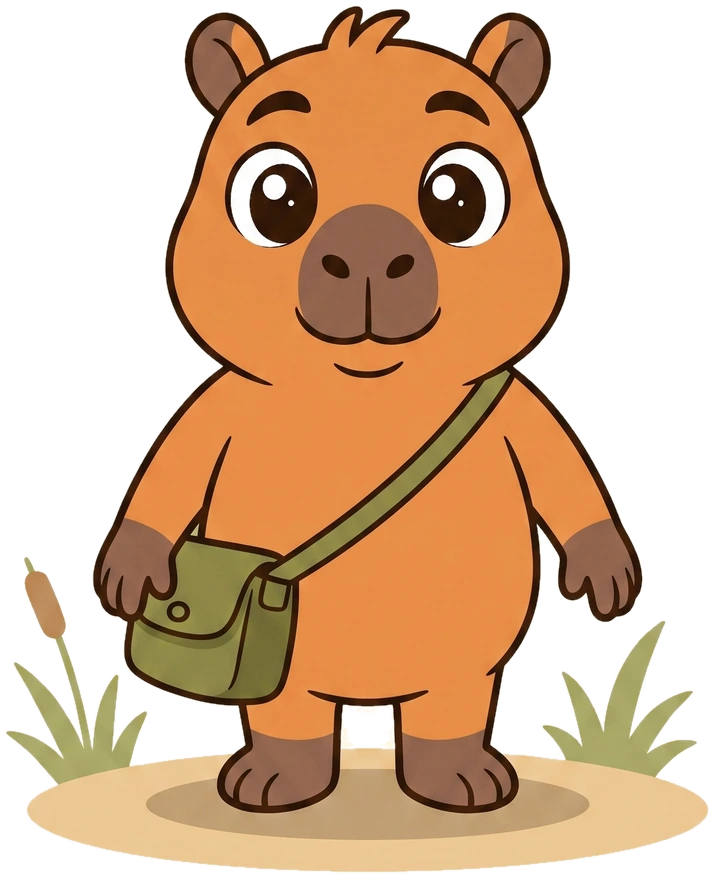

<!doctype html>
<html lang="es-AR">
<meta charset="utf-8">
<meta name="viewport" content="width=device-width,initial-scale=1">
<title>Tres caminos · Botones de EducaPlay Primaria</title>
<style>
@font-face{font-family:Baloo;src:url('fuentes/baloo-2-latin-800-normal.woff2');font-weight:800;font-display:swap}
@font-face{font-family:Nunito;src:url('fuentes/nunito-latin-600-normal.woff2');font-weight:600;font-display:swap}
*{box-sizing:border-box}body{margin:0;background:#fffaf0;color:#3b2a22;font-family:Nunito,system-ui,sans-serif}button{font:inherit;cursor:pointer}header,main,footer{max-width:1450px;margin:auto;padding-inline:36px}header{padding-top:30px;padding-bottom:26px;display:flex;align-items:center;gap:32px;justify-content:space-between}.brand{width:190px;height:auto}.eyebrow{color:#67764f;font-size:12px;letter-spacing:.15em;font-weight:800;text-transform:uppercase}h1,h2,h3,p{margin:0}h1{font:800 clamp(28px,3vw,42px)/1.1 Baloo;margin:6px 0 10px}header p{font-size:15px;color:#786454}.intro{max-width:730px}.grid{display:grid;grid-template-columns:repeat(3,minmax(0,1fr));gap:22px}.option{background:#f4ead8;border:1px solid #dfd0b7;border-radius:26px;overflow:hidden;display:flex;flex-direction:column}.heading{padding:22px 24px 18px;min-height:133px}.number{font:800 12px Nunito;letter-spacing:.12em;text-transform:uppercase;color:#79684e}h2{font:800 27px/1.15 Baloo;margin:7px 0} .heading p{font-size:14px;line-height:1.45;color:#786454}.scene{height:390px;position:relative;background:#e0e9c9 url('arte/fondo-rio.webp') center bottom/cover;overflow:hidden;border-block:1px solid #d4c4a7}.scene:before{content:'';position:absolute;inset:0;background:linear-gradient(#fffaf04d,transparent 70%)}.kapi{position:absolute;bottom:7px;left:-10px;width:205px;height:260px;object-fit:contain;object-position:center bottom;filter:drop-shadow(0 5px 1px #4b38221a)}.speech{position:absolute;top:102px;right:16px;background:#fffaf0;border:2px solid #5b3a25;border-radius:20px 20px 20px 5px;padding:9px 14px;font:800 18px Baloo;rotate:-3deg}.nav{position:absolute;top:20px;left:20px}.actions{position:absolute;right:16px;bottom:30px;display:grid;gap:18px;width:190px}.demo{position:relative;display:inline-flex;align-items:center;justify-content:center;gap:9px;min-height:62px;padding:10px 17px;border:3px solid #513322;color:#fffaf0;font:800 23px/1 Baloo;isolation:isolate;transition:transform .12s,filter .12s,box-shadow .12s}.demo svg{width:29px;height:29px;flex:none}.demo:hover{filter:brightness(1.07);transform:translateY(-2px)}.demo:focus-visible{outline:3px solid #fffaf0;outline-offset:5px}.demo:active,.demo.pressed{transform:translateY(5px);filter:brightness(.95)}.nav .demo{min-height:52px;font-size:20px;padding:8px 16px}.nav .demo svg{width:26px;height:26px}
/* Madera ilustrada: cantos irregulares, vetas suaves y brotes. */
.wood .demo{border-radius:14px 19px 15px 20px;background:linear-gradient(180deg,#91a56a,#617944 50%,#52643a);box-shadow:inset 0 3px 0 #d6dda273,inset 0 -3px 0 #374d3077,0 6px 0 #986139,0 9px 0 #513322}.wood .demo:before{content:'';position:absolute;inset:5px;border:1px solid #e5ebaf3d;border-radius:8px 13px;pointer-events:none;z-index:-1;background:repeating-linear-gradient(176deg,transparent 0 13px,#24361c12 14px 15px,transparent 16px 25px)}.wood .demo:after{content:'';width:24px;height:12px;position:absolute;right:-10px;top:-7px;background:#a0b46a;border:2px solid #513322;border-radius:2px 100% 2px 100%;rotate:-30deg;box-shadow:-13px -6px 0 -2px #6a8748}.wood .secondary{background:linear-gradient(#f3d79c,#d4a66b);color:#513322;box-shadow:inset 0 3px 0 #fff0c1,0 6px 0 #986139,0 9px 0 #513322}.wood .demo:active,.wood .pressed{box-shadow:inset 0 2px 0 #ffffff30,0 1px 0 #986139,0 3px 0 #513322}
/* Fichas: el mismo contorno de los personajes, volumen blando. */
.tile .demo{border-radius:24px;background:linear-gradient(#7d9458,#617744);box-shadow:inset 0 4px 0 #b3c58b,inset 0 -3px 0 #4f6335,0 6px 0 #3d4a2b,0 9px 0 #513322}.tile .demo:before{content:'';position:absolute;left:13px;top:7px;width:24px;height:5px;border-radius:50%;background:#ffffff4d;rotate:-12deg}.tile .secondary{background:linear-gradient(#ffdf79,#efbb3f);color:#513322;box-shadow:inset 0 4px 0 #fff1b0,inset 0 -3px 0 #d6a12d,0 6px 0 #bc842b,0 9px 0 #513322}.tile .demo:active,.tile .pressed{box-shadow:inset 0 2px 0 #ffffff30,0 1px 0 #3d4a2b,0 3px 0 #513322}
/* Explorador: tela del morral, costura y etiqueta de papel. */
.explorer .demo{border-radius:13px 13px 20px 20px;background:#69764d;box-shadow:inset 0 5px 0 #91a073,0 6px 0 #454e30,0 9px 0 #513322;background-image:repeating-linear-gradient(0deg,transparent 0 3px,#1b29120a 3px 4px)}.explorer .demo:before{content:'';position:absolute;inset:6px;border:1.5px dashed #d3dbaf;border-radius:6px 6px 13px 13px;z-index:-1}.explorer .demo:after{content:'';position:absolute;width:10px;height:10px;right:7px;top:-7px;background:#ddb35c;border:2px solid #513322;border-radius:50%;box-shadow:0 1px 0 #fff0bb}.explorer .secondary{background:#fff0cf;color:#513322;border-radius:7px 16px 12px 7px;box-shadow:inset 0 4px 0 #fffbeb,0 6px 0 #c4a679,0 9px 0 #513322}.explorer .secondary:before{border-color:#c3a778}.explorer .demo:active,.explorer .pressed{box-shadow:inset 0 2px 0 #ffffff30,0 1px 0 #454e30,0 3px 0 #513322}
.details{padding:21px 24px 24px;display:flex;flex:1;flex-direction:column;gap:17px}.details p{font-size:14px;line-height:1.5;color:#715d4c}.swatches{display:flex;gap:6px}.swatches i{width:19px;height:19px;background:var(--c);border:1px solid #3b2a2226;border-radius:50%}.choose{margin-top:auto;border:1.5px solid #c5b49a;border-radius:12px;background:#fffaf0;color:#514333;padding:10px;font:800 16px Baloo;min-height:46px}.choose:hover{background:#e9eddb}.choose[aria-pressed=true]{background:#52633b;color:#fffaf0;border-color:#52633b}.option.selected{outline:3px solid #52633b;outline-offset:3px}footer{padding-block:22px;display:flex;justify-content:space-between;gap:20px;font-size:13px;color:#786454}#selection{color:#52633b;font-weight:800;min-height:20px}@media(min-width:1250px){.actions{width:205px;right:22px}.kapi{width:230px;height:280px;left:-5px}}@media(max-width:1050px){.grid{grid-template-columns:1fr;max-width:620px;margin:auto}.scene{height:360px}.kapi{left:35px;width:240px;height:280px}.actions{right:35px;width:220px}.heading{min-height:0}header{align-items:flex-start}.brand{width:130px}.speech{right:35px;top:95px}}@media(max-width:540px){header,main,footer{padding-inline:18px}header{display:block}.brand{width:140px;margin-bottom:20px}.heading,.details{padding:20px}.scene{height:380px}.kapi{width:190px;height:245px;left:-18px}.actions{width:180px;right:14px}.speech{right:16px;top:95px}.demo{font-size:21px}footer{flex-direction:column}.nav{left:16px}}@media(prefers-reduced-motion:reduce){.demo{transition:none}}
</style>
<header><div class="intro"><div class="eyebrow">Primaria · Exploración visual</div><h1>Tres caminos para el mismo estero.</h1><p>Los mismos botones, junto a Kapi. Probá tocarlos y elegí qué familia te gusta más.</p></div></header>
<main><div class="grid" id="grid"></div></main>
<footer><span>Referencia: Forest UI Assets · Tres interpretaciones propias para el Iberá.</span><span id="selection" role="status" aria-live="polite">Todavía no elegiste una favorita.</span></footer>
<script>
const icons={mapa:'<path d="m4 7 8-3 8 3 8-3v21l-8 3-8-3-8 3V7Zm8-3v21M20 7v21"/>',audio:'<path d="M5 12h5l7-7v22l-7-7H5zM22 11q5 5 0 10M26 7q9 9 0 18"/>',next:'<path d="M5 16h21M18 7l9 9-9 9"/>'};
const icon=name=>`<svg viewBox="0 0 32 32" fill="none" stroke="currentColor" stroke-width="2.7" stroke-linecap="round" stroke-linejoin="round" aria-hidden="true">${icons[name]}</svg>`;
const options=[{id:'wood',name:'Madera del estero',tag:'01 · Natural y artesanal',desc:'Madera cálida, verde de hojas y pequeños brotes.',detail:'Más cerca del kit que elegiste. Vetas suaves, bordes de madera y detalles de vegetación.',colors:['#617944','#d4a66b','#986139','#fffaf0']},{id:'tile',name:'Fichas ilustradas',tag:'02 · Suave y juguetón',desc:'Formas mullidas y el mismo trazo de los animalitos.',detail:'El volumen y los reflejos dan carácter. Los colores y el contorno acompañan a Kapi.',colors:['#617744','#efbb3f','#513322','#fffaf0']},{id:'explorer',name:'Equipo de explorador',tag:'03 · Una pequeña aventura',desc:'Tela del morral, costuras y etiquetas de papel.',detail:'Cada control parece una pieza del equipo para recorrer el Iberá: bolsillos, broches y papel.',colors:['#69764d','#fff0cf','#ddb35c','#513322']}];
document.querySelector('#grid').innerHTML=options.map(o=>`<article class="option ${o.id}"><div class="heading"><div class="number">${o.tag}</div><h2>${o.name}</h2><p>${o.desc}</p></div><div class="scene"><div class="nav"><button class="demo" data-demo="mapa">${icon('mapa')}Mapa</button></div><div class="speech">¿Exploramos?</div><div class="actions"><button class="demo secondary" data-demo="audio">${icon('audio')}Escuchar</button><button class="demo" data-demo="next">Seguir${icon('next')}</button></div></div><div class="details"><div class="swatches" aria-hidden="true">${o.colors.map(c=>`<i style="--c:${c}"></i>`).join('')}</div><p>${o.detail}</p><button class="choose" data-choice="${o.id}" aria-pressed="false">Me gusta esta opción</button></div></article>`).join('');
document.querySelectorAll('[data-choice]').forEach(b=>b.addEventListener('click',()=>{document.querySelectorAll('[data-choice]').forEach(x=>{const on=x===b;x.setAttribute('aria-pressed',String(on));x.closest('article').classList.toggle('selected',on);x.textContent=on?'Mi favorita ✓':'Me gusta esta opción'});document.querySelector('#selection').textContent='Tu favorita: '+options.find(o=>o.id===b.dataset.choice).name+'.'}));
document.querySelectorAll('[data-demo]').forEach(b=>b.addEventListener('click',()=>{const scene=b.closest('.scene'), kapi=scene.querySelector('.kapi'),speech=scene.querySelector('.speech');kapi.src='arte/kapi/'+(b.dataset.demo==='next'?'celebra':b.dataset.demo==='audio'?'senala':'reposo')+'.webp';speech.textContent=b.dataset.demo==='next'?'¡Vamos juntos!':b.dataset.demo==='audio'?'Te cuento la consigna…':'¡A recorrer el Iberá!';}));
</script>
</html>
